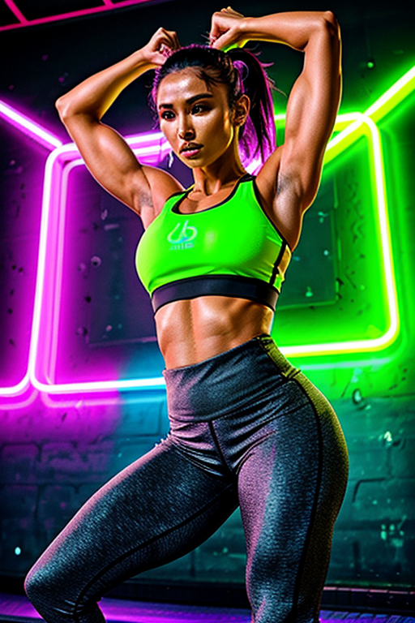
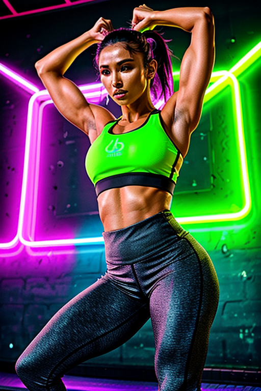

This set explores fitness girl back arch through cinematic aesthetics and warm tone under neon lights. Compositions use rule-of-thirds with minimal set, keeping focus clear and tidy. Details like evening dress styling and balanced colors make browsing easy.
Browse fitness images. Page 1 of curated fitness-style portrait collection.


 



Here we highlight page1, aiming for clean structure, quick scanning, and useful context. Internal navigation leads to related items with comparable tone or composition. This reduces bounce and supports exploration within the same theme. If you are comparing alternatives, keep an eye on subtle differences in framing, contrast, and color balance. Alt text and headings are optimized to make the content accessible and to provide consistent cues across the site. Subtle differences in wording help avoid duplication across similar pages. Bookmark the page if it’s useful; updates aim to improve clarity, speed, and overall structure over time. Alt text and headings are optimized to make the content accessible and to provide consistent cues across the site. Subtle differences in wording help avoid duplication across similar pages. The image aims to deliver a straightforward visual impression while keeping the file lightweight. A brief explanation clarifies the subject and lighting so visitors can quickly decide where to go next. For more context, browse related entries linked nearby; each page offers a slightly different angle to limit overlap.